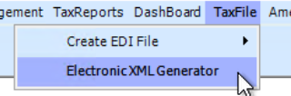
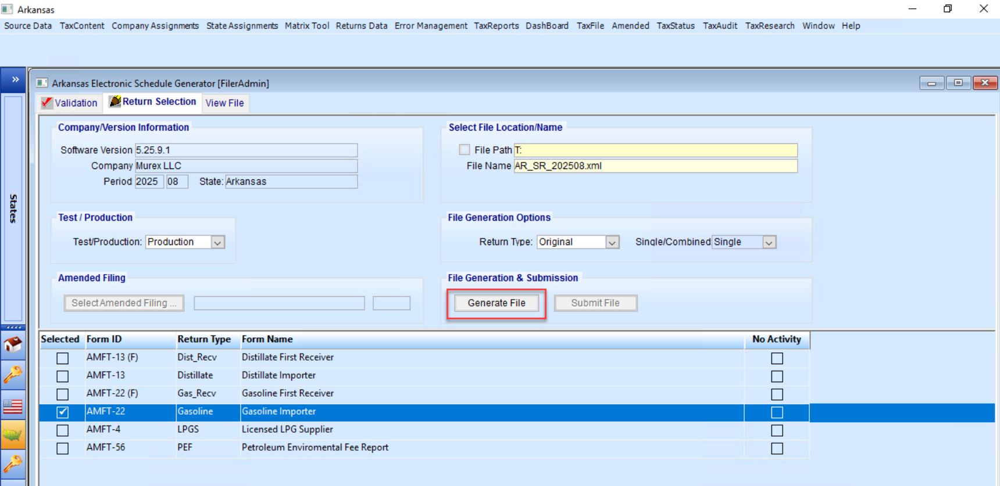

1. Source Data
Source Data contains the transactional data as it was loaded into the AKORE system. No schedule codes or return types are included in this data. Also, any product codes may not be in the state preferred format and could be changed when the Compliance Matrix is run.
Important Note
The Error Management tool at this stage is done on ALL Source data records, regardless of the State for which you are logged in. (See Error Management section for details.)
1.1 Source Data Navigation
- Select the State module → Choose a State
- Click on the Source Data tab, then select BOL Transactions → Search & Edit
Screenshot: State module selection and Source Data navigation
1.2 Data Review and Confirmation
- Review displayed Company Code, Month, Year, Product Code and Mode Code and select 'OK'
- Review total Number of Records Successfully Retrieved for the given state and select 'OK'
Note
The Total Records count will be continually displayed at the bottom of your screen.
Screenshot: Data review confirmation dialog
2. Matrix Tool
The Matrix Tool runs the Compliance Matrix which is used to apply schedule and return types to the imported Source Data. This is also where any state-specific translations are accomplished (Product Codes, Mode Codes, etc.). After the Matrix rules have been applied to the Source Data, the data gets stored as Returns Data.
Important Warning
The matrix has been set up for you by AKORE. DO NOT attempt to modify any of the rules until you are thoroughly familiarized with the process.
2.1 Operating the Matrix Tool
- Click on the Matrix Tool tab → Run the Matrix Tool
- Choose from two execution options:
- Start - Run the Matrix Tool immediately
- Schedule - Set the Matrix Tool to run at a specific date/time
- After running the Matrix Tool, click Close
Screenshot: Matrix Tool interface with Start and Schedule options
Note
The Error Management tool runs automatically as part of the Matrix process to validate your data. If there are any errors or warnings, they will be displayed immediately after the Matrix Tool completes its processing.
3. Error Management
The Error Management component identifies and helps resolve issues in your tax data before submission to ensure accuracy and compliance. This tool is critical for maintaining data integrity and preventing filing errors.
3.1 Accessing Error Management
Error Management can be accessed in two ways:
- As part of the Matrix process (runs automatically when the Matrix Tool is executed)
- Directly through the Error Management tab
Important
When accessing Error Management from the Source Data menu, it will check ALL Source data records, regardless of the State you are logged into. When accessing from the Returns Data menu, it will only check data for the current state.
Screenshot: Error Management tab location
3.2 Reviewing Errors and Warnings
After the Matrix process runs or when you manually launch Error Management, a summary window will appear showing any errors or warnings detected in your data:
- Errors are displayed in RED and must be corrected before filing
- Warnings are displayed in YELLOW and can be addressed but are not blocking issues
The summary window provides the following information:
- Error/warning type (e.g., "MISSING/BLANK CARRIER FEIN")
- Count of records with the specific issue
- Severity level (Error or Warning)
Screenshot: Error Management summary window showing errors in red and warnings in yellow
3.3 Correcting Errors
To address specific errors or warnings:
- Double-click on any error or warning in the summary window
- A new window will open displaying all records with that specific issue
- Navigate to the relevant field(s) that need correction
- Make your changes by selecting from dropdown menus or entering data directly
- Click "Save" in the toolbar to preserve your changes
You can correct records one at a time, or use the Mass Edit tool for multiple similar corrections.
Screenshot: Error correction interface with Save button highlighted
3.3.1 Using Mass Edit Tool
The Mass Edit tool is efficient for correcting multiple records that need the same information:
- RIGHT-CLICK (or SHIFT+RIGHT CLICK) on the column header for the field you want to change
- A dropdown menu will appear with available options
- Select the correct value from the dropdown list
- Confirm the operation when prompted
- Save your changes when complete
Screenshot: Mass Edit dropdown menu interface
Important
When using Mass Edit to update fields like Carrier Name, related fields (such as Carrier FEIN) may need to be updated separately. Unlike individual record updates, Mass Edit doesn't automatically populate related fields.
After correcting all errors, you should run Error Management again to confirm that all issues have been resolved before proceeding with your filing.
Screenshot: Error Management validation confirmation
4. Returns Data
The Returns Data component manages the processed information that will appear on your tax returns. The Returns Data screen is useful in analyzing, editing, and making manual corrections to data.
4.1 Working with Returns Data
- Click on Returns Data tab → Original Schedules
- Manually enter data by clicking on the insert icon
- Use Export to save data for external analysis
- Utilize On Demand Validation to verify data integrity
Screenshot: Returns Data interface with Original Schedules tab
4.2 Data Validation
Returns Data can be validated for missing data and bad data by clicking on the 'Validate' Toolbar button. This launches the validation routine which will check every Returns Data record for the pre-defined error conditions and report those transactions that fail to pass the check for errors.
- Click on the Validate button
- Click Close after it has completed
4.3 Copying Returns Data
Returns Data can be copied from one month and year to another month and year, to another state and/or to an original or amended schedule by clicking on the 'Copy' button in the toolbar.
- Use 'SHIFT+CLICK' on the Returns Data rows to multi-select the rows you want to copy
- Click on the 'Copy' button in the toolbar
- In the popup window that appears, select from the available options:
- Destination Month and Year
- Destination State (if applicable)
- Destination Schedule Table
- Click the 'OK' button at the bottom to complete the copy process
Screenshot: Copy function dialog with destination options
Note
When using the Copy function, the selected data will be duplicated in the destination location while remaining in the original location as well.
4.4 Moving Returns Data
Returns Data can be moved from one month and year to another month and year, to another state and/or to an amended schedule by clicking on the 'Move' button in the toolbar.
- Use 'SHIFT+CLICK' on the Returns Data rows to multi-select the rows you want to move
- Click on the 'Move' button in the toolbar
- In the popup window, select from the available options:
- Destination Month and Year
- Destination State (if applicable)
- Destination Schedule Table
- Click the 'OK' button at the bottom to complete the move process
Screenshot: Move function dialog with destination options
Important
When using the Move function, the selected rows are deleted from the current month and year and copied to the selected destination. This action cannot be undone, so be certain before proceeding.
4.5 User Defined Layouts (Custom Returns Data Layout)
Users can create, name and save custom layouts to better view and work with Returns Data:
- Click on the 'Layouts' button in the Toolbar
- Select an existing Layout or click the 'Manage' button to launch the layout wizard
- Click New
- Arrange the Selected Columns (right table) in your preferred order by using the buttons, or add an Available Column (left table) by double clicking it
- Name and save the custom layout
- Your saved layout will be available for future use
Screenshot: Layout management interface with column selection
5. Dashboard
The Dashboard provides analytical tools and overview capabilities to monitor and manage your tax data.
5.1 Navigating to the Dashboard
- Click on Dashboard tab
- Click on Original Tax Returns
Screenshot: Dashboard navigation with Original Tax Returns option
5.2 Overview Tab
- Select a return from the Tax Return Type drop-down menu
- Click Calculate to process the tax calculations, then select Yes to confirm process
- Click View/Edit to view and edit the data (yellow indicates editable fields) then click Save to recalculate
Screenshot: Overview tab with Tax Return Type dropdown and Calculate button
5.3 Manage Inventory Tab
- Click on Manage Inventory tab
- Review or modify the physical inventory by right-clicking, then selecting an option from the action menu
- Add Inventory Record, Delete Inventory Record, Save Inventory, Refresh, or Calculate
- If any changes were made to the inventory, return to the Overview tab and calculate the return again
Screenshot: Manage Inventory tab with right-click context menu
5.4 Active TaxRates Tab
View the active tax rates that are applicable to the selected return.
Screenshot: Active TaxRates tab showing current rates
5.5 Payments Tab
View the total payments that are applicable to the selected return.
Screenshot: Payments tab showing total payments
6. Tax Filing
The Tax Filing component is where you generate and submit your final tax returns to the state tax authorities.
6.1 Generate XML Files for Electronic Filing
To generate XML files for electronic tax filing submission:
- Navigate to the TaxFile menu at the top of the application
- Select Electronic XML Generator from the menu 
- In the Arkansas Electronic Schedule Generator window, verify the Company/Version Information:
- Company Name
- Period (Year and Month)
- State (Arkansas)
- Select the File Location/Name, ensuring that the location is set to your T: drive
- Configure the File Generation Options:
- Set Test/Production mode as appropriate
- Select Return Type (Original or Amended)
- Choose Single/Combined filing option
Note
If only one tax return is selected, the default filing option is Single. If multiple returns are selected and should be generated altogether, the Combined option will become available.
- Select the appropriate tax forms from the list (e.g., AMFT-22 for Gasoline Importer)
- Click the "Generate File" button to create the XML file 
- Once generated, you can proceed to download the file locally
Note
The Electronic XML Generator creates files in the state-required XML format for electronic submission to Arkansas tax authorities. Ensure all data validation has been completed before generating the final XML file.